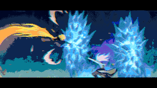

获奖记录
| 获奖时间 | 奖项名称 | 获奖方 | 获奖情况 |
|---|---|---|---|
| 2021年9月28日 | 第18届中国动漫金龙奖最佳系列动画奖 | 《雾山五行》 | 金奖 |
作品评价
《雾山五行》的剧情取材于《山海经》的志怪传说，从片头开始，浓郁的国画意蕴便冲出屏幕、扑面而来，打动无数观众。墨色点染间，张大千的《泼墨图》作为背景徐徐展开，幻化出一个个动画角色。国画写意、工笔两种风格在《雾山五行》中水乳交融。该片大多数时候采取了工笔的画法，细致入微地描绘人物和场景。但最令观众印象深刻的却是写意画法在武打剧情中的应用。主角火行在木桥上与敌人对打时，画面突然从彩色切换成对比强烈的黑白，背景纯白，角色、动作全然省去，以粗犷的黑色线条代替，当中夹杂几条夺目的亮黄，笔触凌厉，变化迅速，让观众直观地感受到了双方出招速度之快，充分将中国式的写意从绘画搬到动画之中 。（新民晚报评）
《雾山五行》的故事非常“中国风”，衍生自中国古代的神话体系，剧情加入许多中国传统文化元素，比如阴阳五行、瑞兽麒麟、民间志怪等，这能让观众很容易进入到动画片的世界观中。在静态场景的呈现上，该片将水墨的意蕴美发挥得淋漓尽致。该片大量的静态山水，采用泼墨手法，虚实结合、重意轻形。其色彩使用上又能跳脱出一般山水画的素雅，大胆浓烈又清新自然，美轮美奂，具有极强的视觉冲击力。更令人印象深刻的是该片的动作场面。水墨动画也承继着水墨画的造型方式，包括以线造型和意象造型 。（澎湃新闻评）
